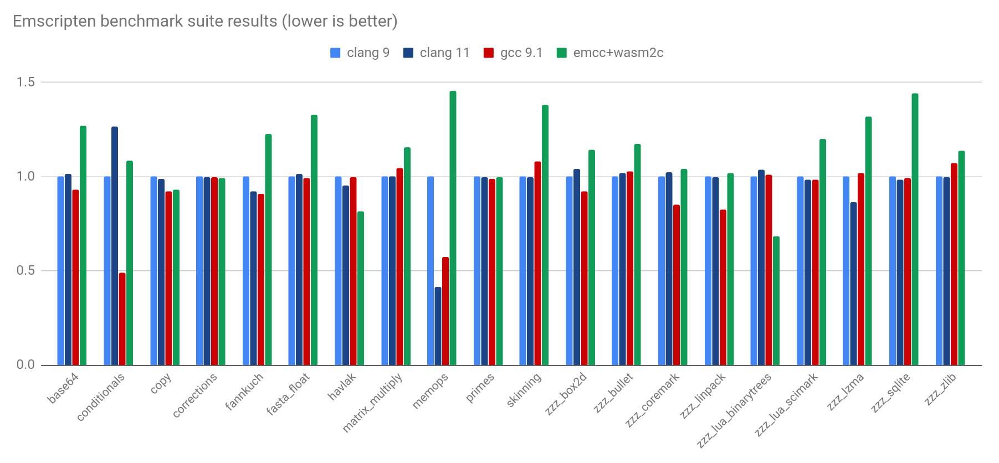

Gestão de Configuração:
SCM - Git
Junho 2020
Frank de Alcantara
O termo "Software Configuration Management (SCM)" Engloba um conceito de controle de modificações em projetos de software durante o desenvolvimento.
E na fase de manutenção durante toda vida útil do produto.
Em português: Gerência / Gestão de Configuração de Software (GCS).
Atividades Relacionadas
Identificar mudanças no código, processo de construção e testes.
Controlar a realização de alterações no código, processo de construção e testes.
Reportar todas as mudanças, alterações e correções de forma clara.
Maturidade: CMMI
Construção ou fornecimento de especificações para construir produtos de trabalho a partir do sistema de configuração.
Manutenção da integridade das baselines.
Fornecimento de dados precisos de status e configuração corrente aos stakeholders,
A baseline (linha base) é definida pelo IEEE 610.12 (1990) como sendo:
“Uma especificação ou produto que foi formalmente revisada e acordada, que irá servir de base para o desenvolvimento e só pode ser mudada através de procedimentos formais de controle.”
Mudanças
Controlamos tudo que pode afetar a qualidade do produto:
especificação de projeto; modelo de dados; componentes; códigos-fonte; especificação de testes; projetos de testes.
Controle de Versão
Procedimentos para o gerenciamento de versões de artefatos de código, teste e configuração criados durante os processos de desenvolvimento e manutenção de um software.
Utiliza um sistema capaz de indicar, controlar e realizar alterações nestes artefatos independente do desenvolvedor.
Controle de Versão
Banco de dados para artefatos de desenvolvimento.
Controle de acesso e histórico de modificações.
Segurança, confiabilidade e disponibilidade.
GIT

// No special sandboxing model; like Python etc.,
// this gives the program a reasonably-portable
// set of OS operations.
const fs = require("fs");
const data = fs.readFileSync("data.dat");
// Can provide imports to wasm that use these indirectly.
WASM Runtimes: WASI APIs
The WebAssembly System Interface, meant for non-Web environments.
WASI is not just a bunch of familiar APIs brought to wasm! It is a new approach to writing an OS interface layer, a replacement for something like POSIX.
In particular WASI uses capability-based security and has stricter portability as well.
The Big Picture for APIs
WASI is supported on Node.js too, not just wasm VMs.
In the long term WASI will likely be the best option for the things it can support.
But WASI is still fairly new, designing a new OS API takes time, and the strict sandboxing will limit what can be done.
Compiling to WASM VMs?
wasm-opt needs C++ exceptions or setjmp (the optimizer uses an interpreter which has stack unwinding).
WASI doesn't support setjmp or C++ exceptions, so that's not an option (yet!)
Compiling to wasm on node.js
Emscripten supports setjmp and C++ exceptions when building to JS+wasm, and it's easy to compile with it:
$ emcmake cmake .
$ make -j8 wasm-opt
And so is running it:
$ node wasm-opt.js input.wasm -O -o output.wasm
# (note the size improvement)
$ ls -lh input.wasm output.wasm
-rw-r--r-- 23K input.wasm
-rw-r--r-- 18K output.wasm
That mostly worked out of the box, but by default Emscripten's output is designed to run in a browser, and is sandboxed. To get direct local file access in node, we use -s NODERAWFS.
That's it! Then node wasm-opt.js runs the same as a normal native executable would.
The good: It has full CPU portability, and as it only does simple file reading and writing Node.js APIs give us full OS portability too!
The reasonable: Throughput is just 28% slower than native.
The bad: A startup delay of about 1 second.
The real solution for startup is wasm code caching, which works on the Web, but not yet on Node.js.
Node 12 had an API for code caching (in Emscripten we added -s NODE_CODE_CACHING) but that needs reworking in Node 14, so it isn't possible atm.
Maybe we don't need wasm? We can compile to JS!
Linking with -s WASM=0 tells Emscripten to emit JS instead of wasm (internally it uses wasm2js).
Speeds up startup by almost 2x! But as you would expect, throughput is 2x slower...
The story so far
- Can't do WASI since no setjmp support :(
- Can't do wasm on Node since startup is slower :(
- Can't do JS on Node since throughput is slower :(
Maybe we should give up?
wasm2c
Part of wabt, compiles wasm → C
Full workflow:
original source → wasm → C "source" → native
Very easy to do!
# tell emscripten to use wasm2c
$ emcmake cmake . "-DCMAKE_EXE_LINKER_FLAGS=-s WASM2C"
$ make -j8
# build the output C normally
$ clang wasm-opt.wasm.c -O2 -lm -o wasm-opt
$ ./wasm-opt # runs like a normal executable!
Wait, isn't all this a little silly? We started with C++, compiled to wasm, then back to C? We still need to compile that C!
| Dev machine: | User machine: |
That C code is easy to compile since there is a C compiler everywhere (e.g. source could be c++20, rust nightly, etc.; might have a complex build system).
Our problems are solved!
Startup is instantaneous, exactly like a normal executable!
Throughput is just 13% slower (half the overhead of the wasm from earlier) thanks to full clang/gcc etc. optimizations!
VM-less Wasm
100% as portable as wasm in a VM
100% as sandboxed as wasm in a VM
But without a VM, which can be simpler and faster.
Benchmarks

{kind=link}
Just 14% overhead on average!
A surprising speed benefit
wasm2c was 30% faster on lua-binarytrees, 20% on havlak! How can that be?
Wasm is a 32-bit architecture (so far). So on a 64-bit host, it's like the x32 ABI: save memory with half-sized pointers.
Wasm is a nice easy way to get x32-like benefits!
Current status of wasm2c
The C code builds on clang and gcc on all platforms, but we could use some help with MSVC and others (we use e.g. __builtin_ctlz).
Currently a single big C file is emitted which takes a while to compile on -O2. We should split into separate files.
wasm2c could be used with any toolchain that compiles to wasm, but I'm not aware of much work aside from Emscripten.
wasm2c integration in Emscripten supports practically everything wasm can do, including setjmp, files, most C++ features (which is how we could run all those benchmarks! but some things are missing, like C++ exceptions)
All of this is open source of course - help is welcome!
Conclusion
wasm2c works surprisingly well! Can be useful today.
In the long term Node.js, wasm VMs, and WASI will all get better, and remove the limitations that we saw.
Even so, a VM-less approach can be simpler for some things.
For example, embedding a wasm VM is great to run arbitrary wasm code. But for fixed wasm code, linking C or precompiled wasm is easier.
Thank you!
Questions?